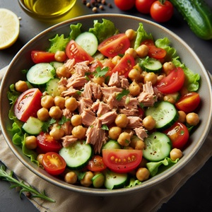
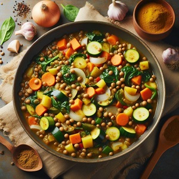

En Integral Wellness, creemos firmemente en el poder transformador de una alimentación saludable y equilibrada.
Es por eso que hemos reunido una selección de recetas deliciosas, creativas e innovadoras que no solo satisfarán tu paladar, sino que también te proporcionarán los nutrientes necesarios para sentirte y rendir al máximo.
Nuestras Recetas:
Desayunos Energizantes: Desde batidos cargados de vitaminas y minerales hasta tostadas llenas de proteínas, nuestros desayunos te prepararán para enfrentar el día con energía y vitalidad.
¡Imagina despertarte con el aroma tentador de un batido verde repleto de frutas tropicales y espinacas frescas!
Almuerzos Nutritivos: Nuestras ensaladas coloridas, wraps llenos de sabor y platos principales balanceados te mantendrán saciado y listo para conquistar tus metas.
¿Qué tal probar nuestra ensalada de quinoa y vegetales, repleta de proteínas, fibras y una explosión de sabores?
Meriendas Saludables: Cuando llegue el momento de recargar energías, nuestras meriendas serán tu mejor aliado. Desde batidos proteicos hasta palitos de zanahoria y hummus, encontrarás opciones deliciosas y nutritivas para satisfacer tus antojos sin remordimientos.
Cenas Reconfortantes: Termina tu día con una cena reconfortante y nutritiva que alimente tu cuerpo y tu alma. Desde curry de verduras y lentejas hasta hamburguesas de pavo con ensalada de col, nuestras cenas te dejarán satisfecho y listo para descansar plácidamente.
Beneficios Adicionales:
Salud para el Corazón: Nuestras recetas están diseñadas para promover la salud cardiovascular, con ingredientes como el salmón rico en omega-3 y las ensaladas cargadas de verduras y granos enteros.
Bienestar Digestivo: Las fibras abundantes en nuestras recetas, como la quinoa y las verduras frescas, fomentan una digestión saludable y previenen el estreñimiento, para que te sientas ligero y lleno de energía.
Refuerzo Inmunológico: Los nutrientes y antioxidantes presentes en nuestras recetas, como la vitamina C de las frutas y la vitamina E de las nueces, fortalecen tu sistema inmunológico y te ayudan a combatir enfermedades.
¡Únete a Nuestra Comunidad de Bienestar!
En Bienestar Integral, no solo ofrecemos recetas, sino también un estilo de vida que promueve el equilibrio, la armonía y la salud en todas sus formas. Únete a nuestra comunidad y comienza tu viaje hacia una vida más saludable y feliz hoy mismo.
DÍA: LUNES
AVENA Y FRUTAS
INGREDIENTES:
Tazón de avena cocida en leche (puede ser leche de almendras o leche de vaca).
Rodajas de plátano, fresas y arándanos.
Una cucharada de semillas de chía o linaza para añadir fibra y grasas saludables.
Una pizca de canela para dar sabor.
PROCEDIMIENTOS DE ELABORACIÓN:
Calienta una taza de leche en una cacerola hasta que esté caliente pero no hirviendo.
Agrega media taza de avena y cocina a fuego medio durante unos 5-7 minutos, revolviendo ocasionalmente, hasta que la avena esté tierna y haya absorbido la mayor parte de la leche.
Retira la cacerola del fuego y transfiere la avena a un tazón.
Corta las frutas en rodajas o trozos según tu preferencia.
Coloca las rodajas de plátano, fresas y arándanos sobre la avena cocida.
Espolvorea una cucharada de semillas de chía o linaza sobre la fruta.
Agrega una pizca de canela por encima si lo deseas
Sirve y disfruta mientras está caliente
INGREDIENTE DESTACADO: AVENA.
BENEFICIO:: La avena es rica en fibra soluble, que ayuda a reducir el colesterol y a mantener estable el nivel de azúcar en la sangre.
DÍA: MARTES
TOSTADAS DE AGUACATE Y HUEVO
INGREDIENTES:
Dos rebanadas de pan integral tostado.
Media palta (aguacate) machacada y distribuida sobre las tostadas.
Huevo pochado o revuelto.
Rodajas de tomate y un poco de espinacas frescas por encima.
PROCEDIMIENTOS DE ELABORACIÓN:
Tuesta dos rebanadas de pan integral en una tostadora.
Mientras tanto, prepara el huevo a tu gusto (pochado, revuelto, etc.).
Machaca media palta (aguacate) en un tazón y sazonar con sal y pimienta al gusto.
Extiende el aguacate machacado sobre las tostadas.
Coloca el huevo cocido encima del aguacate.
Añade las rodajas de tomate y las espinacas frescas sobre el huevo.
Sirve las tostadas y disfruta
INGREDIENTE DESTACADO: AGUACATE.
BENEFICIO:El aguacate es una excelente fuente de grasas saludables, como los ácidos grasos mono saturados, que son buenos para el corazón y contribuyen a la saciedad.
DÍA: MIERCOLES
SMOOTHIE VERDE ENERGIZANTE
INGREDIENTES:
Una mezcla de espinacas frescas, kale o col rizada.
Un plátano maduro.
Un puñado de piña fresca.
Leche de coco o agua de coco como líquido base.
Una cucharada de semillas de chía o de linaza
Opcional: una cucharadita de miel o sirope de agave para endulzar.
PROCEDIMIENTOS DE ELABORACIÓN:
En una licuadora, combina las espinacas frescas, el plátano maduro, la piña fresca y el agua de coco o la leche de almendras..
Agrega una cucharada de semillas de chía o linaza.
Opcional: añade una cucharadita de miel o sirope de agave si deseas un sabor más dulce.
Licúa todos los ingredientes hasta obtener una mezcla suave y homogénea.
Vierte el batido en un vaso y sirve de inmediato.
INGREDIENTE DESTACADO: ESPINACAS.
BENEFICIO: Las espinacas son ricas en hierro, que es necesario para transportar oxígeno por todo el cuerpo y mantener niveles óptimos de energía.
DÍA: JUEVES
YOGUR GRIEGO CON FRUTOS SECOS Y MIEL
INGREDIENTES:
Yogur griego natural o sin azúcar.
Una mezcla de nueces, almendras y nueces de Brasil.
Una cucharadita de miel.
Rodajas de kiwi y algunas bayas por encima.
PROCEDIMIENTOS DE ELABORACIÓN:
Coloca una porción de yogur griego natural en un tazón.
Mezcla una variedad de nueces, almendras y nueces de Brasil en el yogur.
Agrega una cucharadita de miel por encima.
Corta el kiwi en rodajas y añádelo al tazón junto con algunas bayas.
Revuelve suavemente y disfruta.
INGREDIENTE DESTACADO: YOGUR GRIEGO.
BENEFICIO: El yogur griego es una excelente fuente de proteínas, que son esenciales para la reparación y el crecimiento de los tejidos musculares, así como para mantener una sensación de saciedad.
DÍA: VIERNES
BATIDO DE FRUTAS TROPICALES
INGREDIENTES:
1 plátano maduro.
1/2 taza de piña fresca en trozos
1/2 taza de mango fresco en trozos
1/2 taza de leche de coco (o cualquier otra leche de tu elección)
Jugo de 1/2 lima o limón (opcional, para un toque de frescura)
Cubitos de hielo (opcional, para una textura más fresca)
PROCEDIMIENTOS DE ELABORACIÓN:
Pelar y cortar el plátano en trozos..
Cortar la piña y el mango en trozos si no están ya preparados.
Colocar todos los ingredientes en una licuadora: los trozos de plátano, la piña, el mango, la leche de coco y el jugo de lima o limón si lo estás utilizando.
Agregar unos cubitos de hielo si prefieres una textura más fría.
Licuar todos los ingredientes hasta obtener una mezcla suave y homogénea.
Verter el batido en un vaso y disfrutar de inmediato.
INGREDIENTE DESTACADO: MANGO.
BENEFICIO: Apoyo a la salud del corazón: Consumir mango regularmente puede ayudar a mantener niveles saludables de colesterol y presión arterial debido a su contenido de fibra, antioxidantes y compuestos bioactivos..
DÍA: LUNES
ENSALADA DE QUINOA Y VEGETALES
INGREDIENTES:
Quínoa cocida como base.
Vegetales asados como pimientos, calabacines y berenjenas.
Garbanzos cocidos.
Aderezo de limón y aceite de oliva.
Semillas de girasol o de calabaza por encima para añadir textura y nutrientes.
PROCEDIMIENTOS DE ELABORACIÓN:
Cocina la quínoa según las instrucciones del paquete y deja enfriar.
Mientras tanto, corta los vegetales en trozos pequeños y ásalos al horno o a la parrilla hasta que estén tiernos.
En un tazón grande, combina la quínoa cocida, los vegetales asados y los garbanzos cocidos.
Prepara el aderezo mezclando jugo de limón, aceite de oliva, sal y pimienta al gusto.
Vierte el aderezo sobre la ensalada y mezcla bien.
Espolvorea semillas de girasol o de calabaza por encima antes de servir.
INGREDIENTE DESTACADO: QUINOA.
BENEFICIO: La quínoa es una excelente fuente de proteínas vegetales y contiene todos los aminoácidos esenciales, además de ser rica en fibra y minerales como el hierro y el magnesio.
DÍA: MARTES
WRAP DE POLLO Y VEGETALES
INGREDIENTES:
Tortilla de trigo integral.
Pechuga de pollo a la plancha cortada en tiras.
Vegetales crujientes como lechuga, tomate y pepino.
Aguacate en rodajas.
Salsa de yogur griego con hierbas frescas como menta o cilantro.
PROCEDIMIENTOS DE ELABORACIÓN:
Cocina las tiras de pechuga de pollo a la plancha o al horno hasta que estén bien cocidas.
Calienta las tortillas de trigo integral en una sartén o en el microondas.
Extiende una capa delgada de salsa de yogur griego con hierbas frescas en el centro de cada tortilla.
Agrega los vegetales crujientes como lechuga, tomate y pepino.
Coloca las rodajas de aguacate sobre los vegetales.
Dobla los extremos de la tortilla y enróllala firmemente.
INGREDIENTE DESTACADO: PECHUGA DE POLLO.
BENEFICIO: La pechuga de pollo es una excelente fuente de proteínas magras, baja en grasas saturadas y rica en vitaminas del complejo B, que son importantes para la salud del sistema nervioso.
DÍA: MIERCOLES
SOPA DE LENTEJAS Y VEGETALES
INGREDIENTES:
Sopa casera preparada con lentejas, zanahorias, apio y cebolla.
Acompañar con una rebanada de pan integral.
Espinacas frescas añadidas al final para un impulso de hierro y vitaminas.
PROCEDIMIENTOS DE ELABORACIÓN:
En una olla grande, calienta un poco de aceite de oliva y saltea cebolla, zanahorias y apio picados hasta que estén tiernos.
Agrega lentejas previamente enjuagadas y escurridas a la olla junto con caldo de verduras.
Cocina a fuego lento hasta que las lentejas estén tiernas.
Agrega espinacas frescas al final de la cocción y cocina por unos minutos más hasta que se marchiten.
Sazonar con sal y pimienta al gusto.
Sirve la sopa caliente acompañada de una rebanada de pan integral.
INGREDIENTE DESTACADO: LENTEJAS.
BENEFICIO: : Las lentejas son una excelente fuente de proteínas vegetales, fibra dietética y hierro, que son importantes para la salud del corazón y la regulación del azúcar en la sangre..
DÍA: JUEVES
POKE BOWL DE SALMÓN
INGREDIENTES:
Salmón crudo o cocido marinado con salsa de soja baja en sodio y jengibre.
Arroz integral como base.
Aguacate en cubos.
Edamame cocido.
Zanahorias y pepinos en rodajas.
Algas nori picadas para un toque de sabor marino.
Semillas de sésamo y cebolla verde para decorar.
PROCEDIMIENTOS DE ELABORACIÓN:
Corta el salmón en cubos y marínalo con salsa de soja baja en sodio y jengibre rallado durante al menos 30 minutos en el refrigerador.
Cocina el arroz integral según las instrucciones del paquete y deja enfriar.
En un bol, coloca una porción de arroz integral cocido en un lado.
Coloca el salmón marinado en el lado opuesto del bol.
Añade los aguacates en cubos, edamame cocido, zanahorias y pepinos en rodajas al bol.
Espolvorea algas nori picadas y semillas de sésamo por encima.
Sirve con salsa de soja adicional si se desea.
INGREDIENTE DESTACADO: SALMÓN.
BENEFICIO: El salmón es una excelente fuente de ácidos grasos omega-3, que son beneficiosos para la salud del corazón, la función cerebral y la reducción de la inflamación en el cuerpo.
DÍA: VIERNES
PLATO DE PAVO CON VERDURAS AL VAPOR
INGREDIENTES:
Pechuga de pavo a la parrilla o al horno.
Una porción de quínoa o arroz integral.
Brócoli, zanahorias y coliflor al vapor.
Aderezo de aceite de oliva, limón y hierbas frescas.
PROCEDIMIENTOS DE ELABORACIÓN:
Corta la pechuga de pavo en filetes delgados y marínalos con aceite de oliva, ajo picado y hierbas frescas como romero o tomillo..
Calienta una sartén a fuego medio y cocina los filetes de pavo hasta que estén bien cocidos por ambos lados.
Mientras tanto, cocina las verduras al vapor hasta que estén tiernas pero crujientes.
Sirve los filetes de pavo con las verduras al vapor y una porción de quínoa o arroz integral.
Rocía un poco de jugo de limón sobre las verduras antes de servir.
INGREDIENTE DESTACADO: PAVO.
BENEFICIO: El pavo es una excelente fuente de proteínas magras y es bajo en grasas saturadas, lo que lo convierte en una opción saludable para la salud del corazón y el control del peso.
DÍA: LUNES
BATIDO DE PROTEINAS
INGREDIENTES:
Leche de almendras o yogur griego.
Plátano maduro.
Una cucharada de mantequilla de almendras
Espinacas frescas
Proteína en polvo (opcional).
PROCEDIMIENTOS DE ELABORACIÓN:
Coloca todos los ingredientes en una licuadora: leche de almendras o yogur griego, plátano, mantequilla de almendras, espinacas frescas y proteína en polvo (opcional).
Licúa hasta obtener una mezcla suave y homogénea.
Vierte en un vaso y sirve inmediatamente..
INGREDIENTE DESTACADO: ESPINACAS.
BENEFICIO: Las espinacas son una excelente fuente de vitaminas y minerales, incluyendo vitamina K, ácido fólico, hierro y calcio, que son esenciales para la salud ósea y la función del sistema inmunológico..
DÍA: MARTES
PALITOS DE ZANAHORIA Y HUMMUS
INGREDIENTES:
Zanahorias en tiras.
Hummus casero o comprado.
Un puñado de almendras o nueces.
PROCEDIMIENTOS DE ELABORACIÓN:
Corta zanahorias en tiras largas y delgadas.
Sirve con hummus casero o comprado como dip.
Acompaña con un puñado de almendras o nueces.
INGREDIENTE DESTACADO: HUMMUS.
BENEFICIO:El hummus es una excelente fuente de proteínas vegetales y fibra, que ayudan a mantener la saciedad y estabilizar los niveles de azúcar en la sangre.
DÍA: MIERCOLES
YOGUR GRIEGO CON GRANOLA Y FRUTAS
INGREDIENTES:
Yogur griego natural.
Granola casera o baja en azúcar.
Rodajas de plátano, fresas o arándanos.
PROCEDIMIENTOS DE ELABORACIÓN:
Coloca una porción de yogur griego natural en un tazón
Espolvorea granola casera o baja en azúcar por encima.
Agrega rodajas de plátano, fresas o arándanos.
INGREDIENTE DESTACADO: GRANOLA.
BENEFICIO: La granola es una excelente fuente de carbohidratos complejos, fibra y grasas saludables, que proporcionan energía sostenida y promueven la salud digestiva.
DÍA: JUEVES
MANZANA CON MANTEQUILLA DE ALMENDRAS
INGREDIENTES:
Manzana en rodajas.
Mantequilla de almendras untada en cada rodaja.
Un puñado de almendras crudas.
PROCEDIMIENTOS DE ELABORACIÓN:
Corta una manzana en rodajas.
Unta cada rodaja con mantequilla de almendras.
Acompaña con un puñado de almendras crudas..
INGREDIENTE DESTACADO: MANTEQUILLA DE ALMENDRAS.
BENEFICIO: La mantequilla de almendras es rica en grasas saludables, proteínas y fibra, que ayudan a mantener la saciedad y proporcionan energía duradera.
DÍA: VIERNES
BATIDO VERDE ENERGIZANTE
INGREDIENTES:
Espinacas frescas.
Piña fresca.
Pepino.
Jengibre fresco.
Agua de coco como líquido base.
PROCEDIMIENTOS DE ELABORACIÓN:
En una licuadora, combina espinacas frescas, piña, pepino, jengibre fresco y agua de coco.
Licúa hasta obtener una mezcla suave.
Vierte en un vaso y sirve fresco.
INGREDIENTE DESTACADO: PIÑA.
BENEFICIO: La piña es rica en vitamina C y enzimas digestivas, que ayudan a la digestión, fortalecen el sistema inmunológico y promueven la salud de la piel.
DÍA: LUNES
SALTEADO DE TOFU Y VERDURAS
INGREDIENTES:
Tofu firme cortado en cubos.
Verduras variadas como pimientos, brócoli, champiñones y cebolla
Salsa de soja baja en sodio y jengibre.
Acompañar con arroz integral o fideos de trigo integral.
PROCEDIMIENTOS DE ELABORACIÓN:
Corta el tofu firme en cubos y saltea en una sartén con un poco de aceite de oliva hasta que estén dorados.
Agrega los vegetales cortados en trozos (pimientos, brócoli, champiñones, cebolla) y saltea hasta que estén tiernos.
Añade salsa de soja baja en sodio y jengibre rallado al gusto.
Sirve caliente sobre una porción de arroz integral.
INGREDIENTE DESTACADO:TOFU.
BENEFICIO: El tofu es una excelente fuente de proteínas vegetales, bajo en calorías y grasas saturadas, y es una buena opción para vegetarianos y veganos.
DÍA: MARTES
PESCADO AL HORNO CON ESPÁRRAGOS Y PATATAS DULCES.
INGREDIENTES:
Filete de pescado blanco como la tilapia o el bacalao.
Espárragos frescos.
Patatas dulces cortadas en trozos pequeños.
Aceite de oliva, ajo picado y romero para sazonar.
PROCEDIMIENTOS DE ELABORACIÓN:
Coloca filetes de pescado blanco en una bandeja para hornear y sazona con sal, pimienta, ajo picado y un chorrito de jugo de limón.
Corta los espárragos y las patatas dulces en trozos y colócalos alrededor del pescado.
Rocía con aceite de oliva y hornea a 200°C hasta que el pescado esté cocido y las verduras estén tiernas.
Sirve caliente y disfruta.
INGREDIENTE DESTACADO:ESPARRAGOS.
BENEFICIO: Los espárragos son ricos en fibra, vitaminas y antioxidantes, que ayudan a mantener la salud digestiva, reducen la inflamación y promueven la salud del corazón

DÍA: MIERCOLES
ENSALADA DE ATÚN Y GARBANZOS.
INGREDIENTES:
Atún enlatado en agua escurrido.
Garbanzos cocidos.
Pepino, tomate y pimiento rojo en cubos.
Aderezo de vinagreta balsámica.
PROCEDIMIENTOS DE ELABORACIÓN:
Coloca filetes de pescado blanco en una bandeja para hornear y sazona con sal, pimienta, ajo picado y un chorrito de jugo de limón.
Mezcla atún enlatado escurrido, garbanzos cocidos, pepino, tomate y pimiento rojo en un tazón grande.
Aliña con una vinagreta de tu elección o simplemente con aceite de oliva y vinagre balsámico.
Sirve sobre una cama de hojas verdes frescas como lechuga o espinacas.
INGREDIENTE DESTACADO: ATÚN
BENEFICIO: El atún es una excelente fuente de proteínas magras y ácidos grasos omega-3, que son beneficiosos para la salud del corazón, la función cerebral y la reducción de la inflamación en el cuerpo.

DÍA: JUEVES
CURRY DE VERDURAS Y LENTEJAS.
INGREDIENTES:
Curry casero con una mezcla de verduras como zanahorias, calabacines, pimientos y espinacas.
Lentejas cocidas.
Acompañar con arroz integral.
PROCEDIMIENTOS DE ELABORACIÓN:
Prepara un curry casero salteando cebolla, ajo y jengibre picados en una olla grande.
Agrega una mezcla de verduras picadas (zanahorias, calabacines, pimientos, espinacas) y cocina hasta que estén tiernas.
Incorpora lentejas cocidas y mezcla bien.
Añade leche de coco y curry en polvo al gusto.
Cocina a fuego lento hasta que los sabores se mezclen y el curry espese.
Sirve caliente sobre una porción de arroz integral.
INGREDIENTE DESTACADO: CURRY
BENEFICIO: El curry es una mezcla de especias que contiene cúrcuma, que tiene propiedades antiinflamatorias y antioxidantes, y puede ayudar a reducir el riesgo de enfermedades crónicas.
DÍA: VIERNES
HAMBURGUESAS DE PAVO CON ENSALADA DE COL.
INGREDIENTES:
Hamburguesas de pavo caseras o compradas.
Pan integral o sin gluten.
Ensalada de col preparada con col rallada, zanahorias y aderezo de yogur griego.
PROCEDIMIENTOS DE ELABORACIÓN:
Forma las hamburguesas de pavo mezclando carne de pavo molida con cebolla picada, ajo, perejil, sal y pimienta.
Cocina las hamburguesas a la parrilla o en una sartén hasta que estén cocidas por ambos lados.
Prepara una ensalada de col rallando col y zanahorias y aliñando con una mezcla de yogur griego, mostaza, miel y vinagre.
Sirve las hamburguesas de pavo con la ensalada de col y disfruta
INGREDIENTE DESTACADO: COL
BENEFICIO: La col es rica en fibra, vitaminas y antioxidantes, que ayudan a mantener la salud digestiva, reducen la inflamación y promueven la salud del corazón.